NEWSLETTER — EXPO 2026 SPECIAL EDITION
Expo 2026A celebration of business, innovation, partnership & possibility
Reflecting on the people, businesses, ideas and moments that made Expo 2026 memorable. |

|
500+
Exhibitors
|
20+
Countries Represented
|
2,000+
Youth Casual Jobs
|
27
Years of Longest Participation
|
Twenty stories from Expo 2026
What marked Expo 2026
Expo 2026 was more than an exhibition. It was a meeting point for businesses, entrepreneurs, innovators, investors, families, young people and members of the wider community.
Over the course of the Expo, exhibitors had an opportunity to showcase their products and services, connect with potential customers, build relationships and demonstrate the diversity of Rwanda's private sector.
From business exhibitions and electric vehicles to food, entertainment, innovation and children's activities, Expo 2026 created a space where business and community came together.
For PSF, the Expo remains an important platform for connecting businesses with consumers, creating opportunities for networking and showcasing the contribution of the private sector to Rwanda's economic development.
|
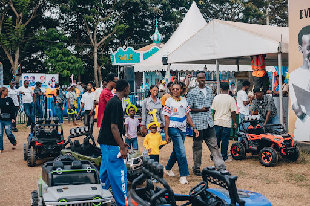 |
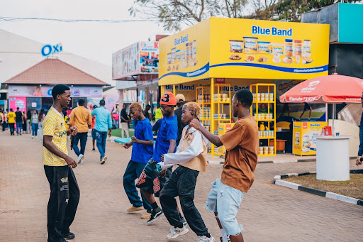 |
Business meets communityExhibitors showcased products and connected with customers across Rwanda's private sector. |
A platform for growthElectric vehicles, food, innovation, and youth commerce created a vibrant ecosystem. |
New markets, new opportunities
Expo 2026 welcomed countries participating for the first time, including Ethiopia and Senegal.
Their participation added another dimension to the Expo by creating opportunities for greater regional and continental interaction.
The presence of new countries also demonstrated the potential of the Expo as a platform for businesses to discover new markets, products, partnerships and investment opportunities.
For exhibitors and visitors alike, new participation means new conversations—and potentially, new business relationships.
|
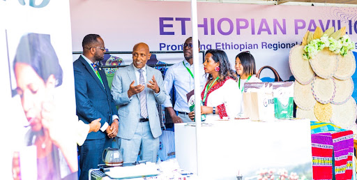 |
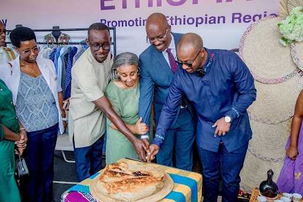 |
27 years of showing up
Some Expo stories are measured not in days or editions, but in decades.
Among the remarkable stories of long-standing participation is the story of a lady from Ghana who has participated for 27 years.
Her journey represents something bigger than simply attending an exhibition. It reflects consistency, relationships, trust and the value that businesses can find in continuing to participate year after year.
Twenty-seven years of participation is a story worth celebrating.
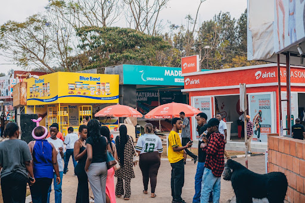
Businesses that stood out
Expo 2026 brought together exhibitors from different sectors, each presenting unique products, services and ideas.
Among them, some exhibitors stood out through their presentation, customer engagement, innovation, product offering and ability to attract visitors.
This story highlights the best-performing exhibitors of Expo 2026, celebrating the businesses that made a strong impression throughout the exhibition.
|
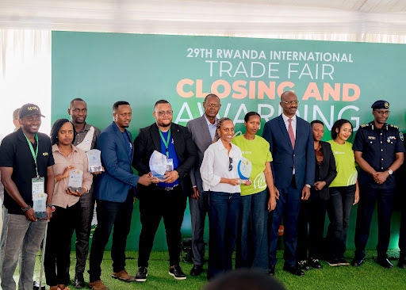 |
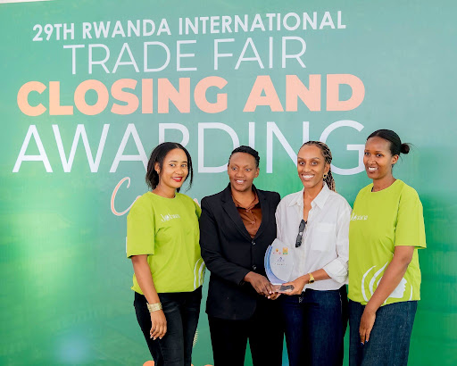 |
Driving towards a more sustainable future
One of the eye-catching features of Expo 2026 was the exhibition of electrical cars.
The presence of electric vehicles provided visitors with an opportunity to see emerging mobility solutions and learn more about the possibilities offered by cleaner transportation.
The exhibition also brought the conversation around innovation, sustainability and the future of mobility closer to the public.
As Rwanda continues to explore sustainable solutions, electric mobility is becoming an important part of the conversation about the future.
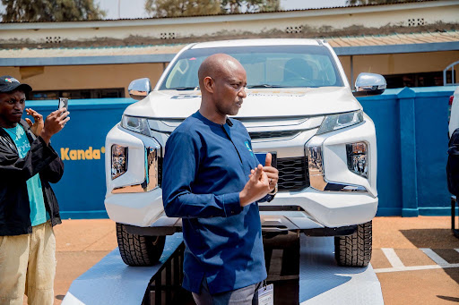
Where business met fun
Expo 2026 was not only about business meetings and product displays.
Food, entertainment and the fun fair created an environment where visitors could relax, enjoy themselves and experience a different side of the Expo.
Food vendors brought a variety of tastes and experiences to the grounds, while the fun fair added excitement for visitors of different ages.
It was a reminder that a successful exhibition can create opportunities for business while also creating memorable experiences for the wider community.

|
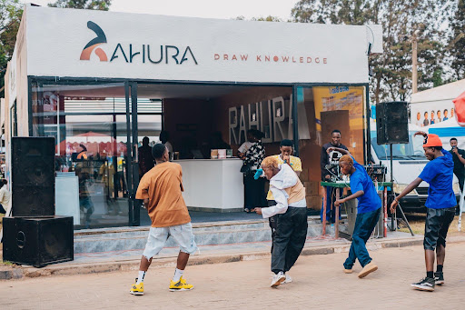 |
Culinary DiversityTraditional Rwandan dishes, regional East African specialties, and quick refreshments kept attendees energized. |
Family Gathering PointSocial pavilions allowed delegates and families to connect in a casual, welcoming setting. |
Music that brought the Expo to life
Music added another layer of energy to Expo 2026.
The performances created moments for visitors to come together, enjoy themselves and celebrate throughout the exhibition.
Special credit goes to Pemcam for organizing the amazing performances that helped make the Expo experience even more memorable.
From the exhibition stands to the stage, Expo 2026 demonstrated that business, culture and entertainment can share the same space.
Featured Artists: Riderman, Bushali, Kenny Sol, Zeo Trap.
|
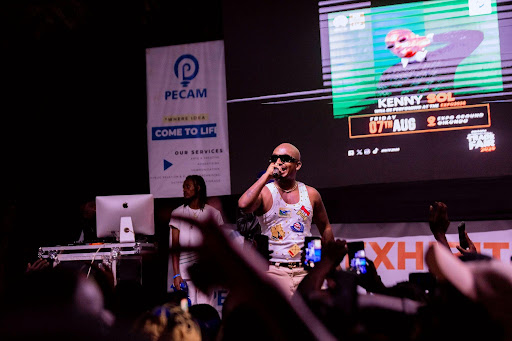 |
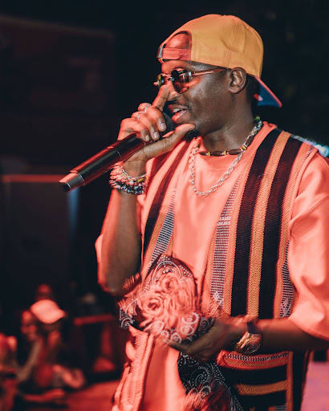 |
The PSF staff understood the assignment
Behind every successful Expo is a team working before, during and after the event.
The PSF staff played an important role in the organization and coordination of Expo 2026, ensuring that different activities and stakeholders were brought together throughout the exhibition.
From coordinating exhibitors and activities to supporting the overall flow of the Expo, the work behind the scenes contributed to the experience visitors encountered on the ground.
This is a story about the people behind the Expo—the coordination, teamwork, long hours and commitment that helped bring Expo 2026 together.
|
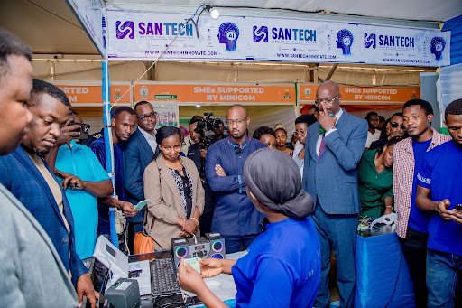 |
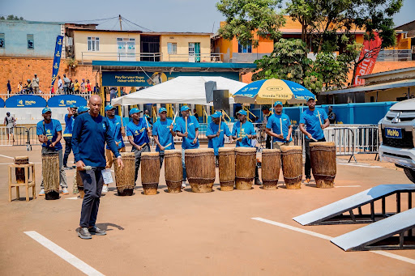 |
A strong general turnout
An Expo is only as vibrant as the people who attend it.
Expo 2026 attracted a strong turnout, bringing together businesses, families, young people, entrepreneurs, consumers and visitors alongside nearly 500 exhibitors from over 20 countries.
The general turnout demonstrated the public's interest in discovering businesses, products, services, entertainment and new experiences.
The crowds became part of the story themselves—turning the Expo grounds into a busy meeting point for business and community.
|
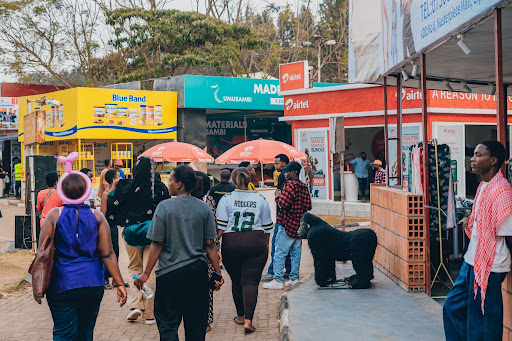 |
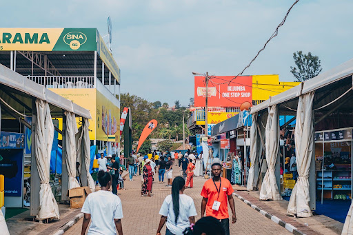 |
A platform for business growth
Expo 2026 brought together businesses and stakeholders from different sectors, and PSF leadership played an important role in reflecting on the significance of the event.
In this story, PSF leadership shares their perspective on Expo 2026, including its achievements, opportunities created for businesses and what the Expo means for the future of Rwanda's private sector.
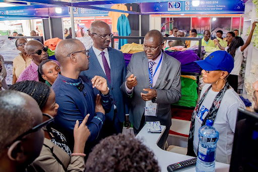
Credit to the security organs
A successful public event depends on more than exhibitors and visitors.
Security organs played an important role throughout Expo 2026, helping maintain a safe and orderly environment for businesses, visitors and participants.
Their presence and coordination contributed to an environment where people could attend, interact, shop, network and enjoy the Expo peacefully.
PSF recognises and appreciates the role played by the security organs during Expo 2026.
A different kind of Expo experience
Beyond business exhibitions and commercial activities, Expo 2026 also created room for creativity, presentation and memorable experiences.
The Beauty and personal-care sector was visibly represented. One report specifically highlighted Movit which returned to Expo 2026 with “The World of Ubwiza” — an experience inspired by Rwanda's culture and beauty. Its exhibition included hair care, skincare, baby-care and oral-care products.
Another beauty brand was Johana Cosmetics, a Made-in-Rwanda hair and skincare company that interacted directly with consumers to showcase its locally formulated products.
The 2026 Expo visitor guide also lists numerous health and beauty exhibitors, including Movit Africa, Johana Product, Manebu Industry, Dzetshal Rwanda, Ai Glamor Avenue and Roba Industries.
|
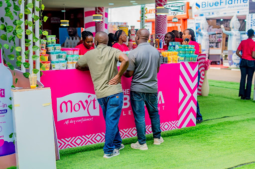 |
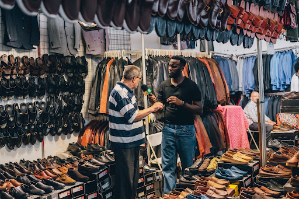 |
Stay tuned for Expo 2027 & the 30-years journey
The next chapter is already waiting. As Expo 2026 comes to a close, the journey does not stop here.
The next edition, Expo 2027, will bring another opportunity for businesses, exhibitors, partners and visitors to connect, showcase and create new possibilities.
But there is another milestone on the horizon: PSF is also looking ahead to its 30-years journey (1997–2027)—a moment to reflect on decades of representing and supporting Rwanda's private sector.
Stay tuned. The journey continues.
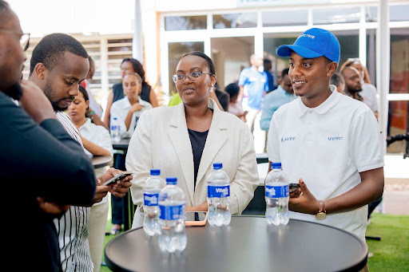
From exhibition to opportunity
An Expo does not end when the exhibition grounds close.
The relationships created during Expo 2026 can continue long after exhibitors pack up their stands.
New connections between businesses, customers, investors and partners create opportunities for future investments, partnerships and business expansion.
Expo 2026 therefore becomes part of a bigger conversation: what comes next? The real measure of the Expo may ultimately be what happens after it.
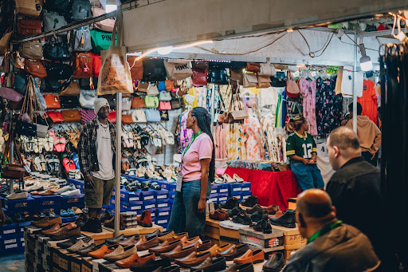
More than 2,000 youth got casual jobs
Young people were at the very heart of Expo 2026.
Expo 2026 created employment opportunities for young people, with more than 2,000 youth gaining casual jobs that provided income while contributing to the smooth running of the event.
From different support roles across the Expo—brand ambassadorship, ticketing, logistics, and ushering—young people became part of the workforce that helped make the event possible.
The story is an inspiring reminder that large events can create tangible opportunities far beyond the exhibition stands themselves.
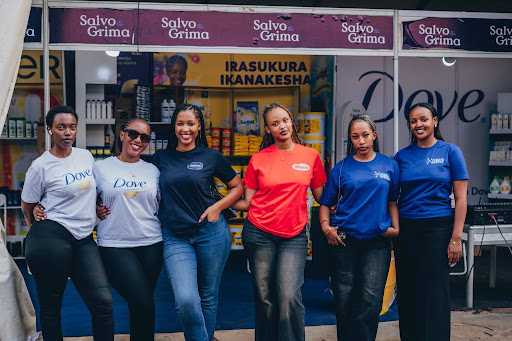
Good conduct of the masses
Doing business in a calm, peaceful and respectful environment.
One of the important features of Expo 2026 was the exemplary good conduct of the masses.
With large numbers of people attending the event, maintaining a calm and peaceful environment was essential for businesses, exhibitors and visitors alike.
The orderly environment allowed people to move around, interact with exhibitors, enjoy activities and conduct business comfortably, benefiting everyone who took part.
|
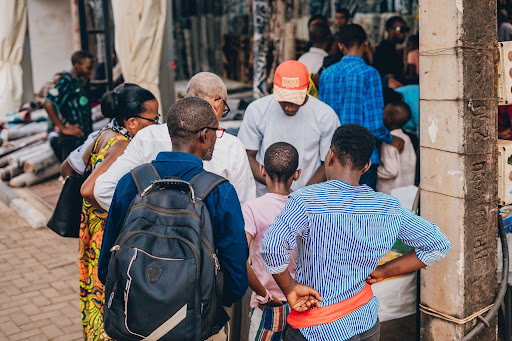 |
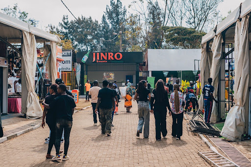 |
Where everyone wanted to be
Every Expo has those stands that seem to attract visitors from the moment the doors open.
At Expo 2026, NIDA and Irembo were among the stands that attracted significant attention and continuous activity.
Their stands provided digital services, national ID processing, and civil registration that visitors were eager to access in real time, making them some of the busiest points at the Expo.
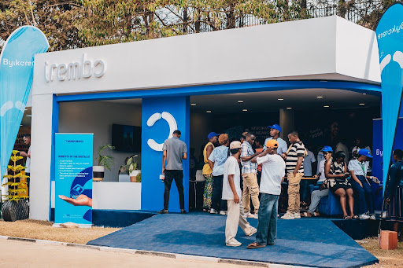
Innovation takes centre stage
Innovation was another vital pillar of Expo 2026.
Across the exhibition grounds, businesses had an opportunity to demonstrate products, services and ideas designed to respond to changing consumer needs and market opportunities.
From technology to mobility, digital financial services and new business solutions, the Expo provided a platform for innovators to put their ideas in front of the public.
Innovation is not only about having a new idea. It is also about finding better ways to solve problems and create lasting value.
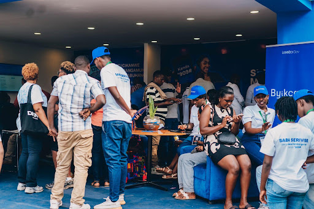
An adventure for the youngest visitors
Expo 2026 was also a place for children and families.
The children's corner created a dedicated space where younger visitors could enjoy themselves while experiencing the Expo in their own way.
Games, activities, carousels and entertainment gave families another reason to spend time at the exhibition.
For children, the Expo became more than a business event—it became a place to explore, play and create cherished memories.
|
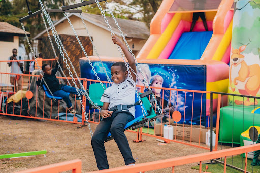 |
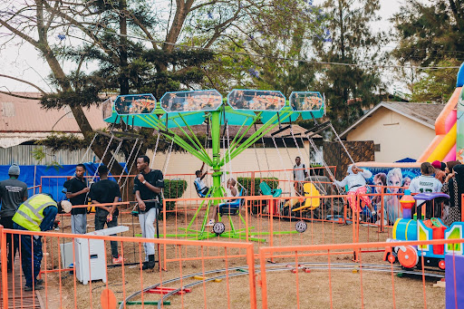 |
Building a more sustainable future
As the private sector continues to evolve, sustainability is becoming increasingly important.
Expo 2026 provided an opportunity to reflect on the role businesses can play in building a green economy and creating more sustainable approaches to production, consumption, transport and investment.
The exhibition of electric cars, innovation and discussions around sustainable business solutions all contribute to a larger conversation about the direction of Rwanda's economy.
The way forward requires businesses, policymakers, investors and communities to continue exploring solutions that support economic growth while protecting the environment.

How can we build it together?
The question is no longer whether we should build a greener economy, but how we can build it together — bringing businesses, policymakers, investors and communities into the conversation.
Expo 2027 & the 30-year journey
Expo 2026 may be over, but the conversations, relationships and opportunities created during the exhibition can continue.
From businesses looking for new markets to young people gaining work opportunities, exhibitors showcasing innovation, international participants building connections and visitors discovering new products and services, Expo 2026 created a platform for many different stories.
The next chapter is already ahead — Expo 2027, and the journey toward 30 years of PSF.